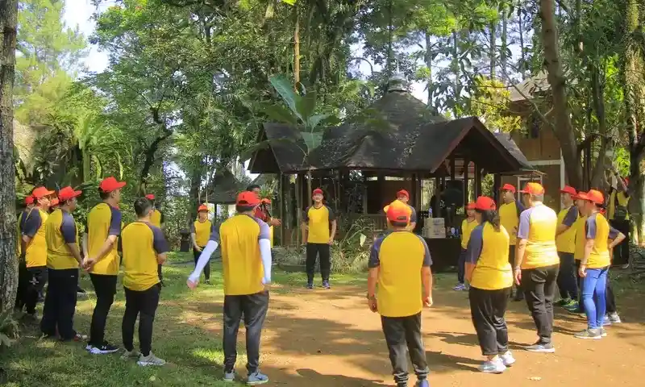

Bagi perusahaan yang sedang mencari lokasi untuk kegiatan outbound, Malang sering muncul sebagai salah satu pilihan yang dipertimbangkan.
Namun sebelum menjatuhkan pilihan, ada baiknya melakukan pengecekan yang cukup teliti bukan hanya soal lokasi yang menarik, tapi juga kesesuaian program dengan kebutuhan tim.
Banyak perusahaan yang akhirnya kecewa bukan karena lokasinya kurang bagus, melainkan karena program yang dipilih tidak benar-benar sesuai dengan tujuan kegiatan atau kondisi peserta.
Artikel ini membahas hal-hal yang perlu dicek sebelum memutuskan program outbound perusahaan di Malang.
DAFTAR ISI
- 1. Kenapa Malang Menjadi Pilihan untuk Outbound Perusahaan?
- 2. Hal yang Perlu Dicek Sebelum Memilih Program Outbound Perusahaan di Malang
- 3. Cara Menyesuaikan Program dengan Kebutuhan Perusahaan
- 4. Pertanyaan yang Perlu Diajukan Sebelum Memilih Program
- 5. Kesalahan yang Perlu Dihindari Saat Memilih Program Outbound
- 6. Tips Membandingkan Beberapa Pilihan Program
- FAQ
1. Kenapa Malang Menjadi Pilihan untuk Outbound Perusahaan?
Malang dikenal memiliki kondisi geografis yang cukup mendukung untuk berbagai jenis kegiatan luar ruangan, dengan udara yang relatif sejuk dibanding kota-kota dataran rendah.
Kondisi ini sering menjadi pertimbangan bagi perusahaan yang mencari suasana berbeda dari lingkungan kerja sehari-hari.
Selain itu, aksesnya yang tergolong mudah dijangkau dari beberapa kota besar di Jawa Timur juga menjadi salah satu faktor pertimbangan logistik. [PERLU VERIFIKASI: ketersediaan dan variasi penyedia program outbound di Malang secara spesifik perlu dicek langsung, karena bisa berubah dari waktu ke waktu.]
Meski begitu, faktor lokasi saja tidak cukup untuk memastikan kegiatan berjalan sesuai harapan. Pengecekan lebih detail tetap diperlukan sebelum menentukan pilihan akhir.

Suasana alam terbuka dataran tinggi sebagai lokasi kegiatan outbound perusahaan.2. Hal yang Perlu Dicek Sebelum Memilih Program Outbound Perusahaan di Malang
Berikut sembilan aspek yang sebaiknya diperiksa sebelum memutuskan program outbound di Malang.
Tujuan Kegiatan
Sebelum menghubungi penyedia program, pastikan perusahaan sudah punya gambaran jelas tentang tujuan kegiatan apakah untuk kerja sama tim, komunikasi, kepemimpinan, atau kombinasi beberapa tujuan sekaligus. Tanpa tujuan yang jelas, sulit menilai apakah program yang ditawarkan benar-benar relevan.
Jenis Program yang Ditawarkan
Setiap penyedia biasanya punya keunggulan dan spesialisasi berbeda. Ada yang lebih fokus pada aktivitas fisik outdoor, ada pula yang lebih menonjolkan aktivitas berbasis diskusi dan problem solving. Pastikan jenis program yang ditawarkan sesuai dengan tujuan yang sudah ditentukan.
Kesesuaian dengan Jumlah Peserta
Tanyakan apakah lokasi dan jenis aktivitas yang ditawarkan memang dirancang untuk menampung jumlah peserta dari tim Anda.
Program yang dirancang untuk kelompok kecil belum tentu efektif jika diterapkan pada rombongan besar, begitu pula sebaliknya.
Lokasi dan Akses
Periksa seberapa mudah lokasi kegiatan dijangkau dari titik keberangkatan peserta, termasuk kondisi jalan menuju lokasi jika berada di area yang lebih terpencil. Hal ini penting terutama jika sebagian peserta berasal dari luar kota.
Durasi Kegiatan
Pastikan durasi program sesuai dengan waktu yang tersedia bagi tim, termasuk waktu perjalanan pulang-pergi jika lokasi cukup jauh dari kota.
Fasilitator dan Pendamping
Tanyakan latar belakang dan pengalaman fasilitator yang akan memandu kegiatan, terutama kemampuan mereka dalam memberikan sesi refleksi yang menghubungkan aktivitas dengan tujuan pengembangan tim.
Keamanan dan Peralatan
Untuk aktivitas fisik atau outdoor, periksa standar keselamatan yang diterapkan, termasuk kondisi dan kelayakan peralatan yang digunakan.
Jangan ragu meminta penjelasan detail mengenai prosedur keamanan sebelum menentukan pilihan.
Fasilitas Pendukung
Cek ketersediaan fasilitas pendukung seperti tempat istirahat, konsumsi, toilet, dan akses kesehatan darurat jika dibutuhkan selama kegiatan berlangsung.
Anggaran dan Rincian Biaya
Pastikan rincian biaya yang ditawarkan jelas dan mencakup semua komponen yang dibutuhkan, agar tidak ada biaya tambahan yang muncul di luar perkiraan awal. [PERLU VERIFIKASI: kisaran harga spesifik sebaiknya dikonfirmasi langsung ke masing-masing penyedia, karena bisa bervariasi tergantung skala dan jenis program.]
3. Cara Menyesuaikan Program dengan Kebutuhan Perusahaan
Setelah memiliki gambaran dari sembilan aspek di atas, langkah selanjutnya adalah mengomunikasikan kebutuhan spesifik tim kepada penyedia program. Beberapa hal yang bisa didiskusikan meliputi:
- Karakteristik tim, termasuk apakah ada masalah komunikasi atau kerja sama yang spesifik ingin diperbaiki.
- Preferensi terhadap intensitas aktivitas fisik, mengingat kondisi peserta bisa bervariasi.
- Kemungkinan penyesuaian program jika ada peserta dengan kebutuhan khusus.
- Ekspektasi terhadap hasil akhir kegiatan, agar penyedia bisa merancang sesi refleksi yang sesuai.
Komunikasi yang jelas sejak awal akan membantu penyedia merancang program yang benar-benar sesuai, bukan sekadar menawarkan paket standar yang sama untuk semua klien.
4. Pertanyaan yang Perlu Diajukan Sebelum Memilih Program
Gunakan daftar berikut sebagai checklist saat berdiskusi dengan penyedia program:
- Apa saja jenis aktivitas yang termasuk dalam program ini?
- Apakah program bisa disesuaikan dengan tujuan spesifik tim kami?
- Berapa jumlah peserta maksimal dan minimal yang bisa ditangani?
- Bagaimana kondisi akses menuju lokasi kegiatan?
- Siapa fasilitator yang akan memandu, dan bagaimana pengalamannya?
- Apa saja standar keamanan yang diterapkan untuk aktivitas fisik?
- Apa saja yang termasuk dalam rincian biaya, dan apakah ada biaya tambahan?
- Bagaimana rencana cadangan jika terjadi kendala cuaca (untuk aktivitas outdoor)?
5. Kesalahan yang Perlu Dihindari Saat Memilih Program Outbound
- Terburu-buru memilih hanya berdasarkan harga termurah tanpa memeriksa kesesuaian program dengan tujuan.
- Tidak menanyakan detail standar keamanan untuk aktivitas fisik atau outdoor.
- Mengabaikan kondisi fisik sebagian peserta demi memilih aktivitas yang terlihat menantang.
- Tidak membandingkan lebih dari satu pilihan penyedia sebelum mengambil keputusan.
- Melewatkan diskusi mengenai tujuan kegiatan dengan pihak penyedia, sehingga program yang diberikan cenderung generik.
6. Tips Membandingkan Beberapa Pilihan Program
- Buat daftar kriteria prioritas tim sebelum mulai membandingkan penyedia, agar tidak mudah tergoda tawaran yang terlihat menarik tapi kurang relevan.
- Minta rincian program secara tertulis dari beberapa penyedia untuk memudahkan perbandingan.
- Perhatikan bagaimana masing-masing penyedia merespons kebutuhan spesifik tim Anda saat konsultasi awal ini bisa jadi indikator kualitas layanan mereka.
- Jangan hanya membandingkan harga, tapi juga kesesuaian aktivitas dengan tujuan dan pengalaman fasilitator yang ditawarkan.
Prinsip pemilihan program ini sejalan dengan kerangka umum yang dibahas dalam Outbound Perusahaan: Konsep Kegiatan, Tujuan, dan Cara Memilih Program yang Tepat, khususnya soal pentingnya konsep outbound perusahaan sebagai dasar sebelum menentukan lokasi dan penyedia.
BACA JUGA:
FAQ
Memilih program outbound perusahaan di Malang membutuhkan lebih dari sekadar mempertimbangkan daya tarik lokasi.
Sembilan aspek yang sudah dibahas mulai dari tujuan kegiatan hingga rincian anggaran bisa menjadi panduan praktis untuk memastikan program yang dipilih benar-benar sesuai dengan kebutuhan tim.
Sebelum menghubungi penyedia, ada baiknya menyiapkan daftar checklist sendiri berdasarkan kebutuhan spesifik perusahaan Anda, agar proses diskusi dengan penyedia program menjadi lebih terarah dan efisien.